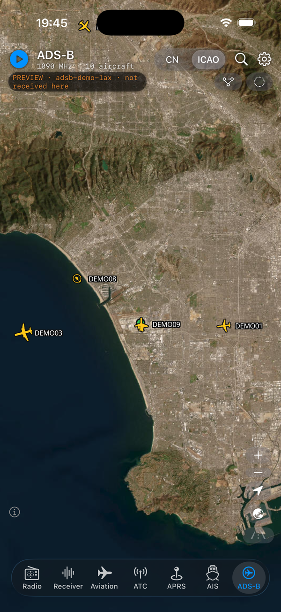
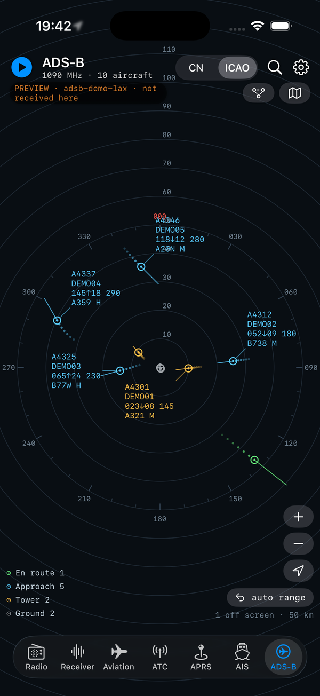

All pages
The app has seven tabs, one for each kind of signal. They share one receiver (unless you set up several), so usually one of them is working at a time.
| Page | Receives | Frequency | Notes |
|---|---|---|---|
| Radio | FM broadcast | 87.5–108 MHz | Scans the band, plays at a tap. Start here. |
| Receiver | Any frequency | 24–1766 MHz | The general receiver: spectrum, waterfall, FM, AM and single sideband; tap the waterfall to tune. Also decodes D-STAR digital voice and pictures, and Yaesu System Fusion (YSF) voice and positions. |
| Aviation | ACARS data link | around 131 MHz | Text messages between aircraft and the ground: positions, weather, clearances, grouped by aircraft. |
| ATC | Air traffic control voice | 118–137 MHz | Tower, approach and ATIS. With airspace data imported it lists the frequencies by airport. |
| APRS | Amateur radio positions and messages | around 144 MHz | Stations and their tracks on a map. Also works without the receiver, from a handheld's audio. |
| AIS | Ship identification | 162 MHz | Ships on a map with position, heading and name. Needs water fairly near. |
| ADS-B | Aircraft position broadcasts | 1090 MHz | A map and a radar scope, with tracks, types and routes; zoomed in, an airport's taxiways and gates. |
Radio and Receiver have their detailed pages; the others are still being written and will follow. They are the entries marked "soon" in the contents.
Which to try first
- RadioFM broadcast is the strongest signal there is. Use it to confirm the receiver, the network and the antenna, and to calibrate the frequency along the way.
- ADS-BWith an antenna that sees a piece of sky there are aircraft to receive in almost any city, and the result is plain to see.
- The othersdepend on what is near you: ATC and Aviation by an airport, AIS by a harbour or a river, APRS where radio amateurs are active.

